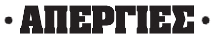

Ο Ιουστίνος με προσέγγισε πριν λίγο καιρό και μου είπε να κάνουμε ένα site για απεργίες, το apergies.gr. Είπα "μέσα, αρκεί να γίνει γρήγορα και απλά". Μαζί με τον Δημήτρη και τον Γιάννη λοιπόν ξεκινήσαμε να δημιουργούμε μια σελίδα όσο πιο minimal γίνεται, κυρίως στην παραγωγή της καθώς όλοι είμαστε πνιγμένοι στην δουλειά. Παρόλο που ο στόχος ήταν να βγει σε 3 μέρες μας πήρε το διπλάσιο και κάτι. Φανταστείτε πόσο offset μπορεί να έχει ένα μεγάλο project...
Μετά από μια εβδομάδα λειτουργίας έχουμε εκπλαγεί από την επιτυχία του εγχειρήματος. Υπάρχει πάρα πολύ μεγάλη αποδοχή από την κοινότητα και ήδη πολύ μεγάλα site από μόνα τους έγραψαν για εμάς. Η μόνη προώθηση από μέρους μου ήταν ένα twit. Αυτό δείχνει την δύναμη του momentum. Όταν υπάρχει ανάγκη για κάτι, παίρνει το δρόμο μόνο του. Σκεφτείτε ότι ήδη υπήρχε το apergia.gr αλλά αυτό δεν εμπόδισε καθόλου την δική μας εξάπλωση. Άλλωστε δεν βγήκαμε να φτιάξουμε μια αντιγραφή, αλλά μια διαφορετική εκδοχή.
Κάθε μέρα προσπαθούμε να κάνουμε τη σελίδα πιο λειτουργική. Σήμερα ετοιμάσαμε ένα widget, διορθώνουμε bug, προσθέσαμε τον καιρό και βελτιώνουμε το design συνεχώς. Όπως όλοι, έτσι και εμείς θέλουμε μια μέρα να μην χρειάζεται η σελίδα μας, προς το παρόν όμως περιμένουμε το feedback σας σε UI αλλά και σε πληροφορία. Αυτό που με χαροποιεί προσωπικά περισσότερο είναι ότι μετά από χρόνια ένα Project ολοκληρώνεται και πάει live! Ένιωθα ολίγον σκουριασμένος.
Α, και να μην ξεχάσω να πω και 2-3 τεχνικά. Το site είναι mashup wordpress με google calendar, google news και twitter και μερικές γραμμές custom κώδικα για να δέσει το μείγμα καλά.
ps. Ευχαριστούμε πολύ τον Δημήτρη για το design της σελίδας.